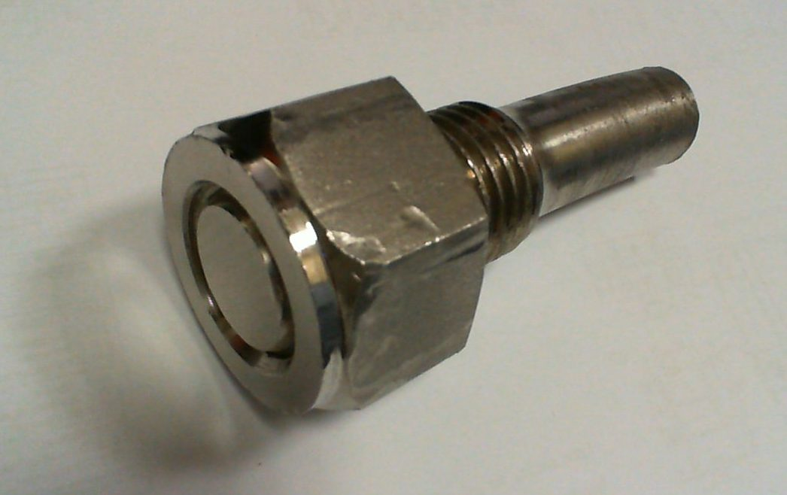

Galling and Seizing of Stainless Steel Bolts
Stainless steel bolts gall and seize far more readily than low-alloy steel bolts, even when the threads look perfect. Why this happens, how it changes the tightening torque, and how to prevent it.
Thread galling, as defined in ASTM F1789 [1], is the displacement of material between mating threads during tightening, which causes the interface contact points to shear. The result is high friction, increased resistance to tightening and, in the worst case, seizing of the threads. Thread galling is most prevalent with fasteners made of materials that self-generate an oxide surface film.
Are stainless steel bolts subject to galling? Should grease or lubricant be applied to stainless steel bolts to reduce friction and avoid seizing during tightening? And if the bolt and nut look smooth and free from burrs or imperfections, can the bolt be tightened with no fear of galling?
Why stainless steel bolts gall
Note the last sentence of the ASTM F1789 definition [1]: thread galling is most prevalent with fasteners made of materials that self-generate an oxide surface film. The definition itself points to stainless steel, whose self-generated chromium oxide layer makes it more susceptible to galling. For the same reason, aluminium and titanium bolts are highly vulnerable to galling when tightened dry. During assembly, contact between the high points on the threads wears away the protective oxide layer and exposes the base metal.
This applies to almost all stainless steel grades, though to different extents. The main factors that contribute to thread galling are friction, thread mismatch, misalignment between bolt and nut, non-uniform threads, thread surface smoothness and cleanliness, and the heat generated during assembly.
Effect on the tightening torque
Comparing a low-alloy steel bolt with an austenitic stainless steel bolt shows how the difference in friction affects the target tightening torque. From ASME PCC-1 [2], the nut factor K is approximately the friction coefficient plus 0.04. For low-alloy steel bolts, K ranges from 0.16 to 0.23; the maximum value, 0.23, is assumed here. From VDI 2230-1 [3], the friction coefficient of dry austenitic stainless steel bolts is 0.30 or higher; taking the minimum, 0.30, gives a nut factor K of 0.34.
Consider two M14 bolts, one in B7 (chromium-molybdenum steel) and one in B8 Class 2 (carbide solution treated and strain-hardened SS304), both tightened dry to the same target stress of 300 MPa. This is 41% of the yield strength of B7 and 45% of the yield strength of B8 Class 2 [5]. The B7 bolt needs a target torque of 97 N·m, while the B8 Class 2 bolt needs 143 N·m, around 1.5 times as much (Table 1).
| Bolt material | B7 chromium-molybdenum steel | B8 Class 2 SS304, carbide solution treated and strain-hardened |
|---|---|---|
| Yield strength, MPa | 720 | 655 |
| Bolt size | M14 | M14 |
| Root area, mm² | 100 | 100 |
| Target stress, MPa | 300 | 300 |
| Nut factor K | 0.23 | 0.34 |
| Target torque, N·m | 97 | 143 |
The extra torque is needed mainly to overcome friction between the bolt and the nut, but it can itself lead to galling and an unsuccessful tightening operation. Figure 2 shows a stainless steel bolt that failed during dry torquing, before reaching the target torque.

How to avoid galling of stainless steel bolts
- Ensure quality manufacturing, with no burrs or deformation on the bolt or nut threads.
- Prefer coarse threads to fine threads.
- Apply a suitable lubricant, properly and in sufficient quantity. Popular lubricants contain substantial amounts of molybdenum disulfide, graphite, mica, talc, copper or zinc fines, or zinc oxide. Zinc-bearing lubricants are not recommended for stainless steel at elevated temperature [4].
- Make sure the threads of both nut and bolt are clean.
References
- ASTM F1789, Standard Terminology for F16 Mechanical Fasteners.
- ASME PCC-1, Pressure Boundary Bolted Flange Joint Assembly.
- VDI 2230-1, Systematic Calculation of Highly Stressed Bolted Joints.
- Nickel Development Institute, Review of the Wear and Galling Characteristics of Stainless Steels.
- ASME BPVC Section II, Part A.
This article is for general engineering guidance. Apply it with the current edition of the referenced codes and standards and the judgement of a qualified engineer.